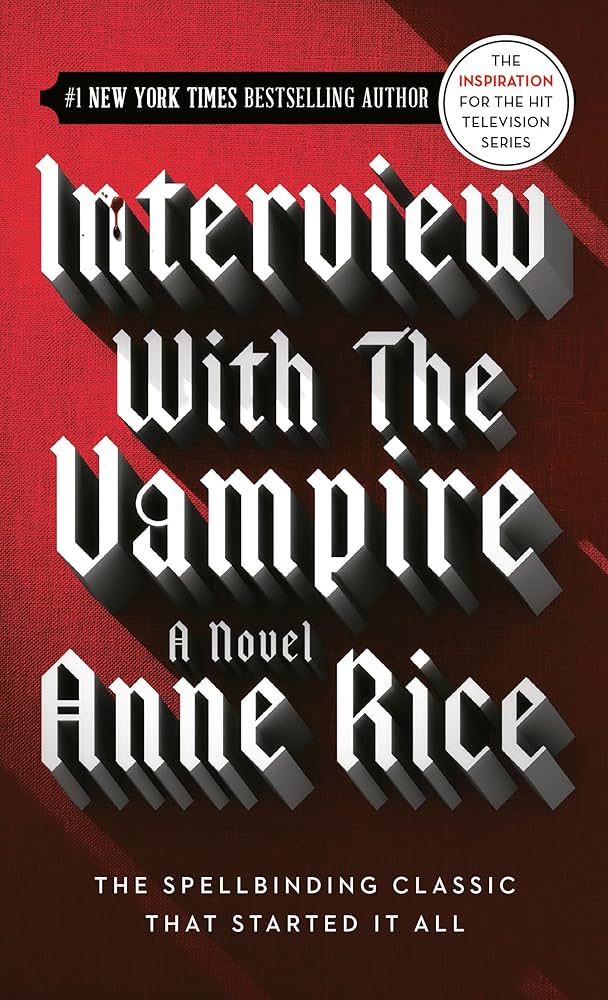

Assignment 4.2: Build a Web Page Exercise - Part 4
A Court of Thorns and Roses
Author: Sarah J. Maas
Interview With A Vampire

Author: Anne Rice
Just Listen
Author: Sarah Dessen
Back to Landing Page